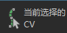

将选择切换到组件模式，并允许您指定哪些导向或曲线 CV 是您要选择的。然后，您可以通过操纵选定的 CV 来定形导向或曲线。
选择 1 到 5，以指定您要选择的 CV。
1 表示默认导向的尖端的 CV。您可以选择的 CV 数量取决于选定的导向具有多少 CV。
使用此选项可选择所有导向 CV。
使用此选项可返回对象选择模式。
指定要选择的 CV 后，使用此选项来切换到组件选择模式，同时选定指定的 CV。